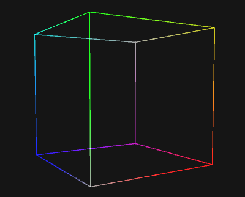

Projection in 4D
Projecting is a method to illustrate an object to dimension that is lower than the object itself. Projection of four-dimensional is quite challenging if you haven't heard it before.
There are two projection methods that has been implemented in the library.
Frustum Projection
Frustum projection works like common camera games and our eye would - further objects get more smaller image. Frustum projection covers what would be commonly known as perspective and orthographic projection.
If the object goes out of scope, it gets culled by a set of planes, which the process is commonly known as frustum culling.
Tip
There's a lot more features and cool tricks to be discovered. More info here.
Cross section Projection
Cross section takes a completely different way to project a higher dimension. Cross section does that by cutting an object and take the slice to lower dimension by rotating it back to an orientation that accesible with lower dimension objects.

If this kind of projection has been known for very long time why I didn't see any games have use it?
Because you need to know how to cut down something into thing that renderable to 3D graphics (i.e. triangles). One way is to use tetrahedron as the building blocks. Why? Because tetrahedron is the simplest possible geometry shape that has a volume, and when it cutted, the result is always either a triangle or quad.
Tip
Cross section is the default projection because its simplicity. More infohere.